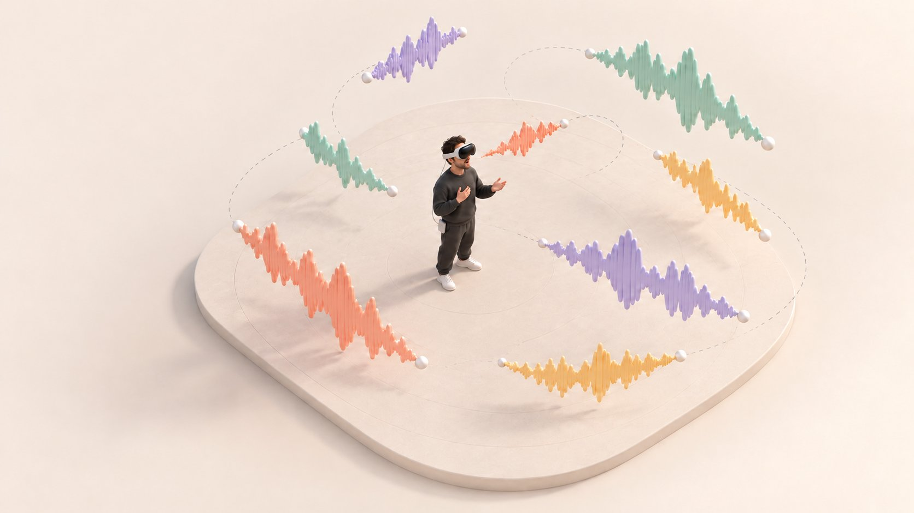
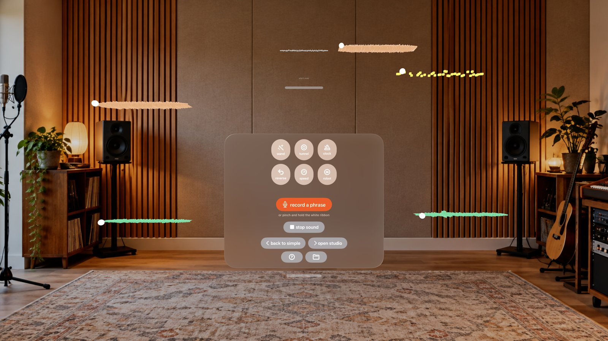
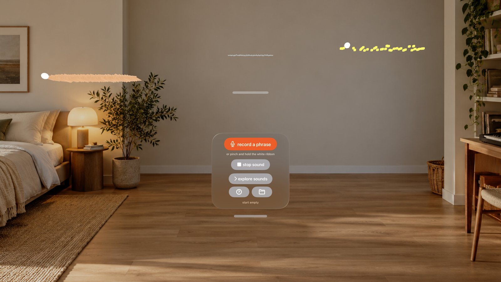
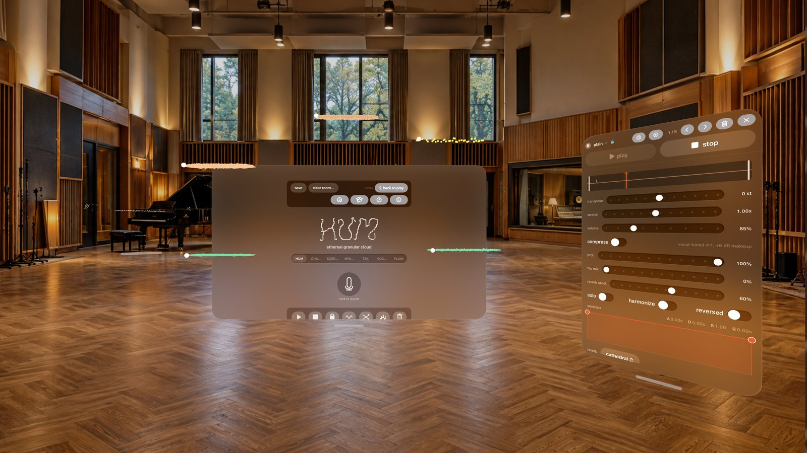
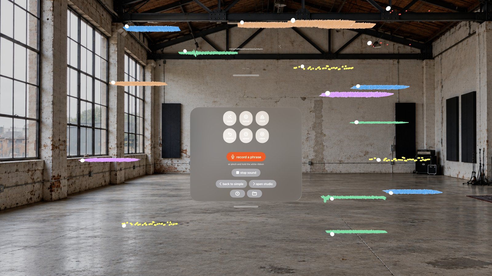

Available now on Apple Vision Pro
Sing into
the air.

Weird noises welcome.
Sing.
Tap “record a phrase”, then sing.
Loop.
Tap “finish recording” to hear it repeat.
Move.
Drag a ribbon to choose where it plays from.

A chorus of you.
a duet with your earlier self
Room to
experiment.
Change the pitch, add reverb or delay, or try granular effects. See what sounds good to you.



no effects
You’ve got
layers.
Find a place for every little bit of lip-made nonsense.


POV: let it all out
Yours to keep.
Your recordings stay on your Vision Pro. No account, uploads, or tracking.
Privacy policySay hello.
Questions or ideas? I’d love to hear from you.
acapellavp@icloud.com Getting started & supportPrivacy policy
Open as a separate pageRead the complete privacy policy
Last updated: 31 October 2026
Acapella Spatial is a spatial vocal looper for Apple Vision Pro. It is designed to run entirely on your device. This policy explains what data the app touches and what it does with it.
- No data leaves your device. The app makes no network requests.
- No accounts, no tracking, no analytics, no advertising.
- No third-party SDKs that collect data.
Microphone
Acapella Spatial records your voice through the microphone so you can capture singing and humming as spatial loops. Audio is captured and processed entirely on-device and is never uploaded, transmitted, or shared. Recordings you keep are saved locally as audio files inside the app's own Documents area. You can delete clips and scenes from within the app; they are also removed when you delete the app.
Hand tracking
The app uses hand tracking to let you capture and shape sounds in the air (pinch, drag, and stretch gestures). Hand-tracking data is used live, on-device, to drive these interactions. It is not recorded, stored, or transmitted.
Data storage
All app data — your captured clips and saved scenes — stays in local storage on your Vision Pro. Nothing is synced to a server operated by us, because the app has no server and makes no network connections.
Data sharing
We do not sell, share, or disclose any personal data, because the app does not collect or transmit any.
Children's privacy
Acapella Spatial does not collect personal information from anyone, including children.
Changes to this policy
If this policy changes, the updated version will be published at this address and the "Last updated" date above will change.
Hearing and volume
Acapella Spatial plays sound through your headset. Layered loops, effects and the demo can become loud, and spatial audio can feel closer than it is. The app includes a limiter and an automatic loudness guard, but no software can know what is safe for your ears.
You are responsible for your own listening volume. Start low, keep your headset volume moderate, and take breaks. Stop immediately if you experience discomfort, ringing, or pain. To the fullest extent permitted by law, the developer accepts no liability for hearing damage, discomfort, or any other harm arising from listening volume or from the audio the app produces.
Contact
For privacy questions, email acapellavp@icloud.com. If you contact us, your email and anything you choose to attach are used to respond to your request. This is separate from the app, which does not upload recordings or tracking data.